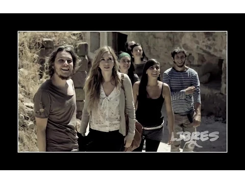
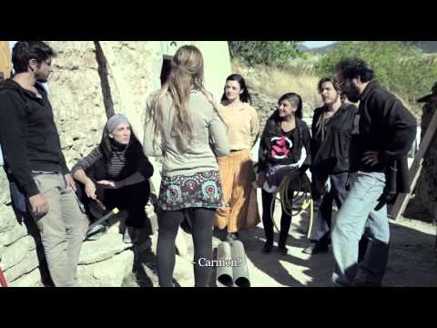
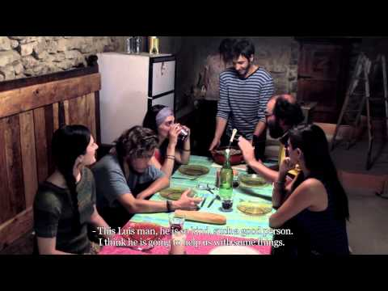
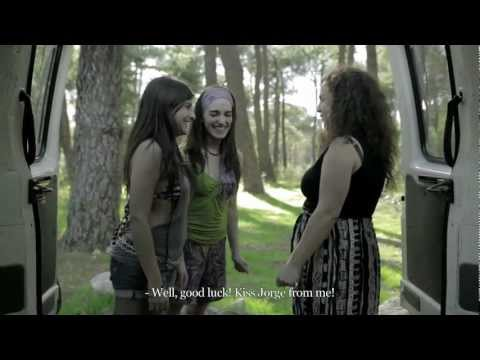
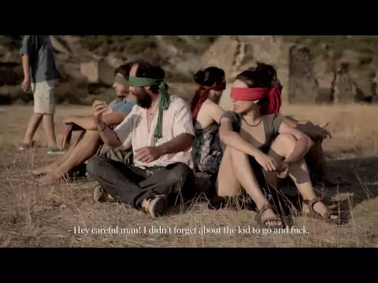
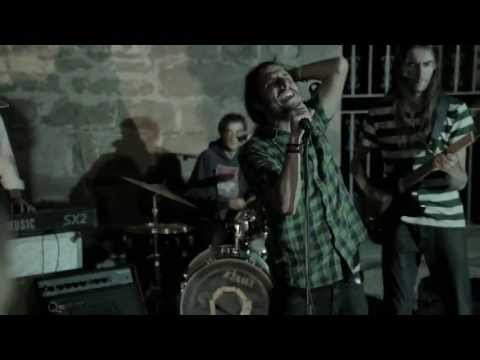
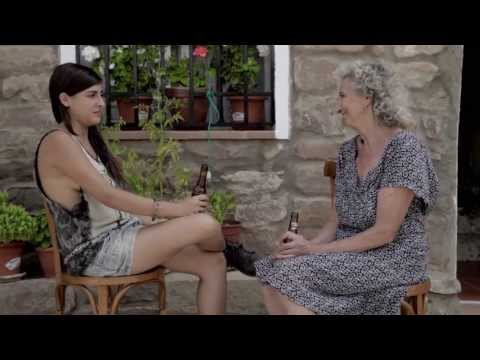
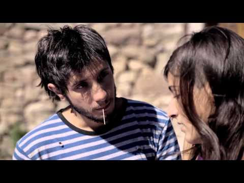
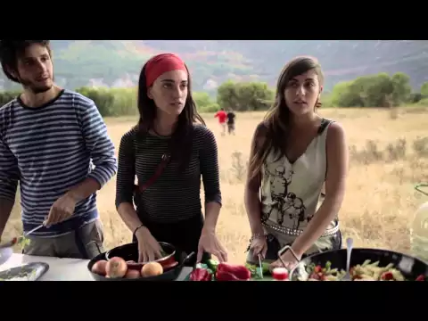
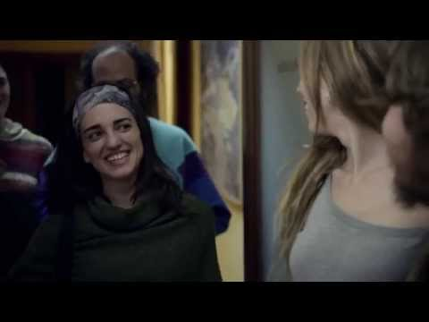

Capítulos

Capítulo 1
La Partida

Capítulo 2
Primer Contacto

Capítulo 3
Los Jefecillos

Capítulo 4
Pirineos TV

Capítulo 5
El Zagal

Capítulo 6
El Concierto

Capítulo 7
Los Pasaportes

Capítulo 8
Cicatrices

Capítulo 9
El encuentro

Capítulo 10
El juicio
Acerca de Nosotros
Conoce a nuestro equipo
LIBRES ha contado con un equipo artístico y técnico de primer nivel. Apostando por siete actores jóvenes de gran proyección como protagonistas, secundados por un reparto de larga trayectoria en cine, televisión y teatro, como Juanjo Artero, Silvia Casanova, Jordi Rebellón, Joaquín Climent y José Luis García Pérez.
Reparto principal:
Nahia Láiz,
Rikar Gil,
Nacho Redondo,
Diego Santos,
Andrea Vicunia,
Julie Vachon,
Carmen Giménez.
Equipo:
- Creación y dirección: Álex Rodrigo
- Guión: Beltrán Stingo y Álex Rodrigo.
- Fotografía: Íñigo Olea
- Arte y Vestuario: Marga Martínez
- Sonido: Javier Cano y Amanda Pons.
- Dirección de producción: M.J. Caballero
- Ayudantes de dirección: Ezequiel Romero, Ana Llanos.
- Montaje: Álex Rodrigo, Ezequiel Romero.
- Música original: Javier Cano, Alberto Mayoral.
- Efectos Visuales: Ezequiel Romero.
- Casting: Jerónimo Salas, Luz Martí, Irene Ferradas.
- Ayudantes Producción: Gador Camacho, Sonia Sanz.
- Auxiliares de Producción: Laura Piqueras, Javier Palomino, Borja Fernández, Diego Ramos.
- Auxiliares de cámara: Marta Matute, Tania Salvatella, Rocío del Pino.
- Refuerzo de Sonido: Daniel Canelo, Daniel Álvarez y David Carratalá.
- Asistente de dirección: Almudena Vera
- Ayudante Arte: Irene Ferradas
- Maquillaje: Marga Martínez, Sheila Notario, Claire Bravo.
- Asistente Casting: Irene López Guerrero
- Web: Jesús Melero, Paul Melero.
- Subtítulos inglés: Eva Ferradas, Manuel Mata Pastor, Inés Adán, Patricia Martín Chozas.
- Recursos Barcelona: Mireia Torres
Equipo Canarias:
- Producción: Rocío Eslava
- Fotografía: Ezequiel Romero
- Sonido: Miguel J. Álvarez
Temas musicales:
- Los Brodies
- Gipsy Pour Jazz
- (CC) Josh Woodward, Wooden Legs, Leipzig, Jahzzar, Butterfly Tea.
Making of:
- Realizadores/editores: Alberto del Río, Nacho Redondo, Álex Rodrigo.
- Cámara: Beltrán Stingo, Alberto del Río, Álex Rodrigo.
- Producción: MJ Caballero
- Producción general: Beltrán Stingo